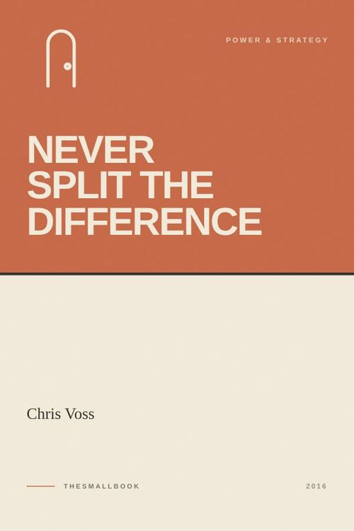

Library › Ask the Library › How do I influence people?
How do I influence people?
The short answer
Influence is not pressure, it's preparation. Set the frame before you speak, give before you ask, and let people feel they decided.
The books behind the answer
Pre-Suasion
Robert Cialdini · 2016 · 8 min · 6 lessons
The best moment to persuade is before you start persuading. Set the frame first, and the argument sells itself.
- The Privileged Moment: The best moment to persuade is before you start persuading. Set the frame, and the ask sells itself.

Influence: The Psychology of Persuasion
Robert B. Cialdini · 1984 · 9 min · 7 lessons
Persuasion runs on fixed psychological triggers: reciprocity, commitment, social proof, liking, authority, scarcity, unity. Know them or be played by them.
- Reciprocity: The Debt You Didn't Ask For: Reciprocity, commitment, social proof, liking, authority, scarcity, use them honestly or they backfire.

Never Split the Difference
Chris Voss · 2016 · 8 min · 6 lessons
Negotiation isn't logic or compromise - it's emotional intelligence weaponized: tactical empathy, calibrated questions, and 'No.'
- Tactical Empathy: People agree with those who understand them. Label their feelings and they'll open the door.

How to Win Friends & Influence People
Dale Carnegie · 1936 · 11 min · 8 lessons
You can make more friends in two months by becoming interested in other people than in two years trying to get people interested in you.
- Six Ways to Make People Like You: Talk about what THEY want, and you'll both get what you want.
A failure that proves it
Why did Cambridge Analytica fail?
2018 · TRUST · Loss: The company, and Facebook's $5B fine
Cambridge Analytica influenced an election with lies, and got destroyed. Influence without integrity is a time bomb.
Any data you collect will eventually be used to the full limit of what's technically possible - by someone. Design systems for the worst plausible user, because they've already signed up.
Questions people ask next
Can I read this in Hindi?
Yes. This answer is written in simple English. Open any linked book and choose Hindi or Hinglish to read the full lessons in your language, with audio where available.